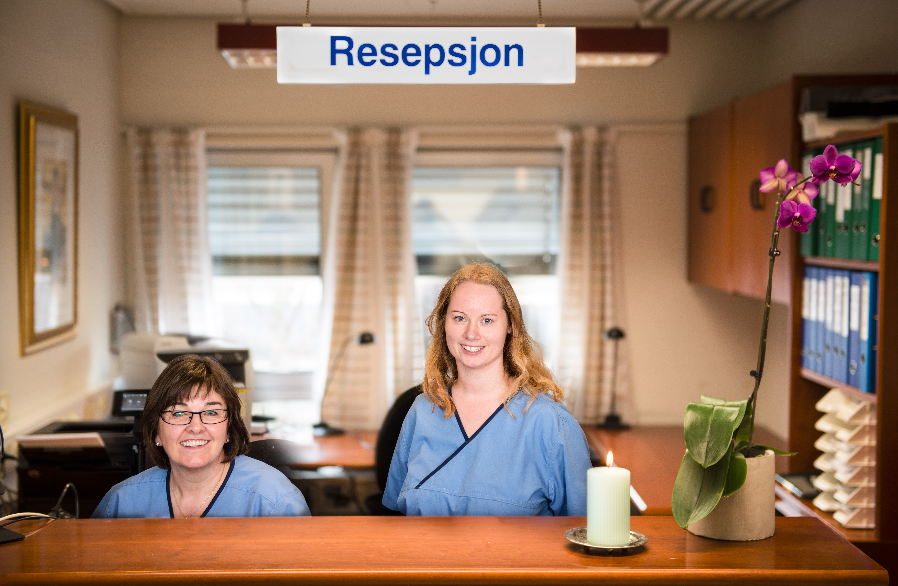

Komplett tannhelse — under ett tak
Fra den årlige sjekken til komplekse behandlinger som implantater og rotfylling — vi tar imot deg med varme, erfaring og moderne utstyr.

Årlig sjekk og forebygging
En grundig årlig undersøkelse er den enkleste måten å holde tennene friske på resten av livet. Vi finner små problemer før de utvikler seg til store.
Den årlige kontrollen tar normalt 30–45 minutter og er noe vi anbefaler for alle voksne og barn over 6 år.
- Klinisk undersøkelse av tenner, tannkjøtt og bløtvev
- Bitewing-røntgen for å se mellom tennene
- Profesjonell rens og polering hos tannpleier
- Råd og veiledning om munnhygiene

Akutte tjenester
Plutselige tannsmerter, knekt tann eller hevelse? Ring oss tidlig på dagen — vi gjør alt vi kan for å sette av tid samme dag.
Akuttvurdering omfatter rask diagnose og lindring. Mer omfattende behandling planlegger vi sammen i etterkant.
- Akutt smertelindring og diagnose
- Behandling av abscesser, hevelse og tannskader
- Midlertidig fylling eller forsegling ved behov
- I helger: Drammen tannlegevakt 31 01 29 30 · Kongsberg 32 86 83 01

Estetisk tannbehandling
Et fint smil starter med god tannhelse — og kan løftes ytterligere med skånsomme estetiske behandlinger.
Vi tilpasser farge, form og uttrykk slik at resultatet ser naturlig ut og passer ansiktet ditt.
- Tannbleking — hjemmebleking med skinner eller bleking på klinikken
- Fasetter for varig forandring av form og farge
- Estetiske fyllinger som matcher tannen perfekt
- Helhetlig smile design med digital forhåndsvisning
Implantater
Implantater er en moderne, varig erstatning for tapte tenner — de ser ut, fungerer og oppleves som dine egne tenner.
Linda Dukefos har spesialkompetanse i implantatprotetikk med refusjonsrettighet fra HELFO. Vi planlegger hvert tilfelle nøye med digital diagnostikk og 3D-røntgen ved behov.
- Enkelttannimplantat eller bro på flere implantater
- All-on-4 / All-on-6 for tannløse kjever
- Bentransplantasjon ved redusert kjevebein
- Skånsom kirurgi og oppfølging
Fyllinger
Tannfargede, holdbare fyllinger som gjenoppretter funksjon og utseende — uten kvikksølv.
Vi bruker moderne kompositter som binder seg til tannen og bevarer mest mulig av det friske tannvevet.
- Plastfyllinger i alle størrelser
- Erstatning av gamle amalgamfyllinger
- Estetisk gjenoppbygging av frontfyllinger
- Midlertidige fyllinger ved behov

Rotfylling
Når tannnerven er betent eller skadet, kan rotfylling redde tanner som ellers måtte trekkes.
Behandlingen gjennomføres skånsomt og smertefritt under god lokalbedøvelse, ofte over to seanser.
- Diagnose med klinisk undersøkelse og røntgen
- Rens og forsegling av rotkanalene
- Permanent fylling og — der det er nødvendig — krone
- Behandling av 1-, 2- og 3-rotede tenner
Kroner og broer
Skreddersydde porselensløsninger som gjenoppretter tannens form, styrke og utseende.
En krone dekker en svekket tann fullstendig. En bro erstatter en eller flere tapte tenner ved å forankre i nabotenner eller implantater.
- Helkeramiske og metallkeramiske kroner
- Fast bro forankret i nabotenner
- Implantatstøttet bro for større tannmangel
- Stift med oppbygging når lite tannvev gjenstår
Proteser
Avtagbare løsninger tilpasset for komfort, naturlig utseende og god tyggefunksjon.
Vi tar nøyaktige avtrykk og prøver protesen flere ganger underveis for å sikre at den sitter stødig og ser naturlig ut.
- Helprotese for over- eller underkjeve
- Delprotese forankret med klamre eller skjult feste
- Implantatstøttet protese for økt stabilitet
- Reparasjon og rebasing av eksisterende proteser
OPG — Panoramarøntgen
En digital oversiktsrøntgen som viser alle tenner, kjeve og rotsystemer i ett bilde.
OPG er smertefri, tar bare sekunder, og gir oss et komplett bilde av munnhulen — viktig for planlegging av implantater, kirurgi og helhetsbehandling.
- Digital lavstrålingsteknologi
- Kartlegging av visdomstenner og rotforhold
- Diagnostikk av kjeveledd og bihuler
- Henvisning fra annen tannlege mottas
Klar for å bestille time?
Vi tar oss tid til å forklare, lytte og finne den behandlingen som passer best for deg. Ta kontakt — vi gleder oss til å se deg.